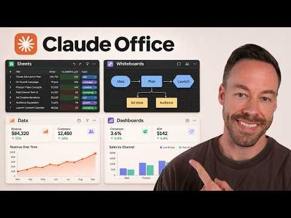

Selbststudium · Video-Transkript

Quelle: „Claude Office killt Excel, Miro und Excalidraw“ · Chase AI · 12 Min · automatisch transkribiert
Anthropic greift klassische Buero-Anwendungen an: Diese Woche sind Claude Whiteboards, Claude Sheets und Claude Data erschienen. Chase AI testet alle drei und ordnet ein, wo sie Excel, Miro und Excalidraw wirklich ersetzen – und wo (noch) nicht.
Der Autor fragt provokant, ob Claude gerade Excel getoetet hat – die Antwort: noch nicht, aber Anthropic hat mit Claude Sheets, Whiteboards und Data den ersten Schritt getan. Er hat alle drei getestet und zeigt, wie sie funktionieren, wo sie konkret nuetzlich sind und wie man das Beste aus ihnen herausholt. Als Ausblick wird zum Schluss noch Claude Meetings gestreift.
Unendliche kollaborative Leinwand
ab 1:10Eine unendliche Leinwand wie Excalidraw: zeichnen, Diagramme erstellen, Claude selbst zeichnen lassen, Mini-Apps bauen (z. B. ein Rechner, der Eingabe-Token live auf dem Board kalkuliert), Live-Umfragen durchfuehren und Notizen fuer Teammitglieder hinterlassen. Ein kollaborativer Raum, in dem auch Claude mitarbeitet.
Kommentare an Team oder Claude
ab 1:49Chat unten zum Anweisen; ueberall Notizen moeglich. Per «Kommentar zu diesem Element» richtet man eine Anmerkung entweder an Teamkollegen oder direkt an Claude – Beispiel: «Mach das neo-brutalistisch», worauf Claude das Diagramm auswaehlt und im Handumdrehen umbaut. Whiteboards haengen an einem bestimmten Chat; ueber den Chat-Button oben rechts kommt man zum Ursprungs-Chat zurueck, Teilen und manuelle Eingaben ebenfalls oben rechts.
Praesentationshilfe & interaktive Daten
ab 2:55Der echte Mehrwert laut Autor: als visuelle Praesentationshilfe (Stift waehlen, auf Dinge zeigen, einkreisen – ersetzt Excalidraw) und zur interaktiven Datenvisualisierung. Beispiel: Claude hat die YouTube-Daten des Kanals per API gezogen, in eine grosse CSV verwandelt und auf dem Whiteboard als einfaches, interaktives Dashboard dargestellt – Hover zeigt das jeweilige Video. Jetzt vollstaendig in Claude integriert.
Excel-Funktionen & Auto-Formatierung
ab 4:33Ein Excel-Klon, noch in der Beta. Bietet Zeilen, Spalten, Makros, Formeln, Dropdowns, Tabs und Formatierung. Dieselbe YouTube-CSV reingegeben und «leg los» gesagt – Claude hat alles sortiert, formatiert, mit Veroeffentlichungsdaten, Prozentwerten und Farbcodierung versehen und zusaetzlich einen Zusammenfassungs-Tab im Dashboard-Stil gebaut, ungefragt. Rechtsklick auf eine Zelle: «Claude fragen» oder Kommentar (z. B. «Erklaere diese Zahl»).
Sheets vs. Google Sheets vs. Excel
ab 5:47Es geht um Anwendungsbereiche: Claude Sheets eignet sich fuer schnelle Tracker, Budgets und Listen. Fuer Finanzmodellierung oder Big Data weiter bei Excel bleiben. Groessenlimit: 100.000 Zellen pro Blatt gegenueber 10 Mio. Zellen/Datei (Google Sheets) bzw. 1 Mio. Zeilen × 16.000 Spalten (Excel). Staerke: Claude in den Workflow einbinden, ohne Claude in Excel nutzen zu muessen – am besten testen, indem man eine grosse CSV/XLSX hochlaedt.
Live-Dashboards mit Design-System
ab 7:12Frueher Claude Dashboards, jetzt Claude Data – im Kern dasselbe, aber mit Fokus auf Live-Daten, die automatisch aktualisiert und in einem von Claude gebauten Dashboard angezeigt werden. CSV reingegeben: KPIs oben, detaillierte Aufschluesselung darunter, auf Wunsch im neo-brutalistischen Stil, Hover fuer Details. Man kann eigene Design-Vorgaben / Farbpalette / Branding fuettern, die dann als Design-System eingehalten werden – relevant fuer den Unternehmenseinsatz.
Vier Formate: Dashboard, Scrollyteller, Visual Short, Visual Analysis
ab 8:27Dashboard ist das Standardformat. Scrollyteller macht daraus eine scrollbare Geschichte (Text links, Daten und Animationen rechts) – gute Praesentationshilfe. Visual Short verwandelt die Daten in ein Video mit echter Audio-Erzaehlung (im Beispiel: 29 von 59 Videos unter dem Durchschnitt, 16 Erfolge; Matchup-Videos fuehren mit 197 %, Problem-Fix 133 %, Bestvideo 565 %; lange Videos ~7 % CTR, Shorts ~4 %; ~71 % eines Shorts bzw. ~31 % eines langen Videos werden angeschaut). Visual Analysis ist nur eine weitere Dashboard-Variante – laut Autor kaum ein Grund, sie zu nutzen.
Claude nimmt an Anrufen teil
ab 11:08Kurz vor dem Dreh angekuendigt: Auf Team-/Enterprise-Plaenen kann Claude an Anrufen teilnehmen, mithoeren und danach Dokumente, Whiteboards und andere Artefakte erstellen. Der Autor hat noch keinen Zugriff – aber es unterstreicht die Stossrichtung, dass Claude die gesamte Bueroarbeit ins Visier nimmt.